수집에서 화면까지 직접 구현
7개 패키지 · 테스트 130개데이터 수집, 상품 매칭, 저장, 가격 비교, 웹 화면, 내보내기를 한 사람이 설계하고 구현했습니다.
무신사 회원가와 KREAM 사이즈별 시세를 수집하고, 같은 상품인지 규칙과 VLM으로 가려낸 뒤 사람이 확정한 매칭만으로 가격을 비교하는 로컬 웹 애플리케이션입니다. 아래 그림에서 기능을 누르면 구현, 실행 화면, 소스 위치, 한계가 열립니다.
데이터 수집, 상품 매칭, 저장, 가격 비교, 웹 화면, 내보내기를 한 사람이 설계하고 구현했습니다.
사람이 이미지를 보고 하던 동일 상품 검토에 VLM을 붙이고, 맞은 것과 틀린 것을 같은 데이터로 측정했습니다. VLM의 제안은 사람이 승인해야 반영됩니다.
확인해 확보한 매칭 수입니다(정확도 아님). 49개 증가 중 35개는 규칙 개선, 14개는 VLM 제안을 검토해 채택한 것입니다.
원형인 데스크톱 프로그램은 작성자가 고객에게 판매한 프로그램입니다(작성자 설명. 이 저장소에는 판매 증빙이 없습니다).
범위: 완전 자동화는 개발 중인 목표입니다. 지금은 사람이 검수 화면에서 승인해야 매칭이 확정되고, 구매·입찰·결제는 프로그램이 하지 않습니다. 화면의 "가격 차이"는 KREAM 즉시구매가에서 무신사 회원가를 뺀 값이며 수수료와 배송비를 반영한 순이익이 아닙니다. 화면 캡처는 운영 DB와 분리한 데모 DB에서 저장된 실데이터를 재생해 찍었고 쇼핑몰과 API를 호출하지 않았습니다.
상자를 누르거나 Tab으로 이동해 Enter를 누르세요. 실선은 데이터, 점선은 실행 제어, 보라색 점선 상자는 아직 구현하지 않은 계획입니다.
원래 프로그램은 버튼 하나가 전체 과정을 돌리는 데스크톱 창이었습니다. 단계별로 실행하고, 진행 중인 결과를 보고, 틀린 매칭을 고칠 화면이 필요했습니다. 웹 화면은 그 조작과 확인을 맡습니다.
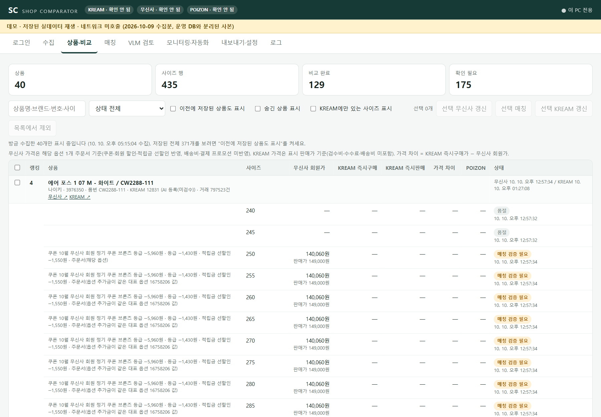
// 쇼핑몰에서 온 문자열은 textContent로만 넣는다 (static/app.js)
function el(tag, props = {}, ...children) {
const node = document.createElement(tag);
for (const [k, v] of Object.entries(props)) {
if (k === 'text') node.textContent = v; // innerHTML을 쓰지 않는다
...
shop_comparator/web/web_app.py create_app, local_only(127.0.0.1·Host·CSRF 확인) · web/templates/index.html · web/static/app.js poll, renderProducts, reviewCard
default-src 'self'입니다.수집은 수십 분이 걸리고 중간에 쇼핑몰이 거절하거나 연결이 끊깁니다. 무엇이 끝났고 무엇이 남았는지 모르면 처음부터 다시 돌려야 합니다. 작업 관리는 모든 수집·검토를 작업 단위로 실행하고, 대상 하나하나의 처리 상태를 남깁니다.
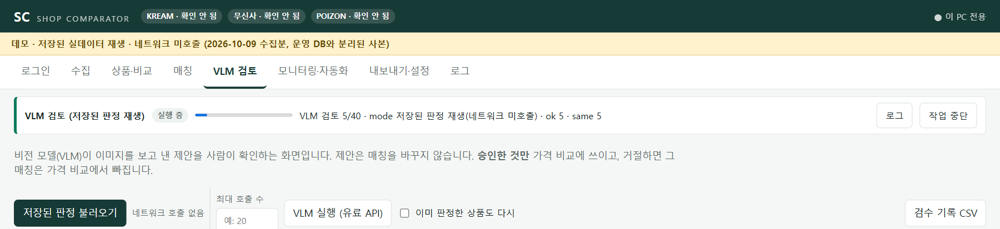
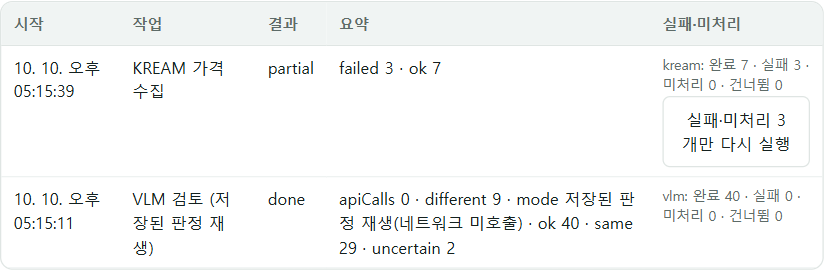
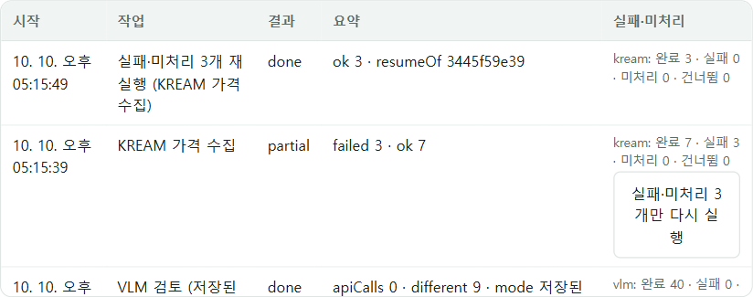
# 대상 하나당 한 행. 재시도는 덮어쓰고 중복을 만들지 않는다 (storage/store.py)
INSERT INTO job_items (jobId, stage, goodsNo, state, errorKind, error, updatedAt)
VALUES (?, ?, ?, ?, ?, ?, ?)
ON CONFLICT(jobId, stage, goodsNo) DO UPDATE SET state = excluded.state, ...
# 남은 것만 고른다 (services/pipeline.py)
def unfinished(job_id):
return {stage: [goodsNo ...] for row in store.job_items(job_id)
if row["state"] in ("pending", "failed")}
services/jobs.py JobManager.start, JobContext.check · services/pipeline.py unfinished, resume_musinsa, quote_products · web/web_app.py job_resume · 테스트 tests/test_vlm_review.py PriceRecoveryTests
두 쇼핑몰 모두 프로그램의 직접 요청을 거절합니다. 같은 PC에서 방식만 바꿔 요청해 원인을 확인했고, 쇼핑몰 페이지가 열린 Chrome 안에서 사이트가 쓰는 JSON API를 호출하는 방식으로 바꿨습니다.
| 방식 | 무신사 | KREAM |
|---|---|---|
requests + Chrome User-Agent | 403 | 500 |
| 헤드리스 Chrome | 200 | 500 |
| 일반 창 Chrome | 200 | 200 |
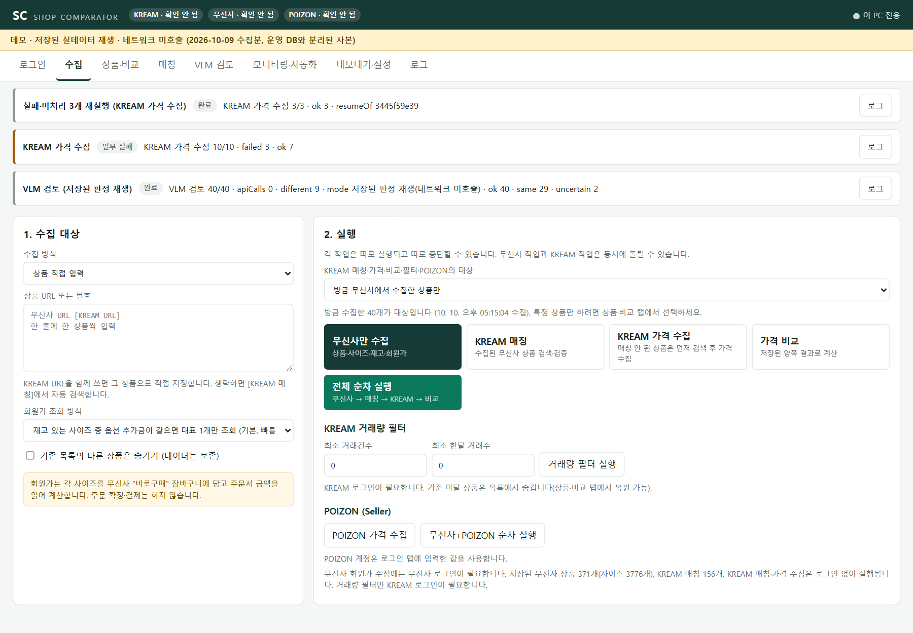
# 기존 코드가 쓰던 requests 인터페이스를 유지하고 전송만 바꾼다 (shops/browser_transport.py)
with browser_transport("kream", start_url=...):
data = kream_crawler.run_curl_json(url, headers) # 실제로는 페이지 안의 fetch()
shops/browser_transport.py BrowserSession · shops/crawler.py price_option · shops/kream_api.py fetch_quotes, parse_buy · shops/site_login.py verify_musinsa, verify_kream · docs/collection-strategy.md
가격은 사이즈마다 다르고, 두 쇼핑몰의 사이즈 표기도 다릅니다. 기존 프로그램은 숫자만 뽑아 비교해서 US 8과 UK 8이 같아질 수 있었고, 첫 사이즈의 회원가를 모든 사이즈에 복사했습니다.
| 원본 사이즈 | 키 |
|---|---|
| 250, 250mm, W250, KR 250 | MM:250 |
| US 8 / UK 8 | US:8 / UK:8 (서로 다름) |
| 2XL, XXL | A:XXL |
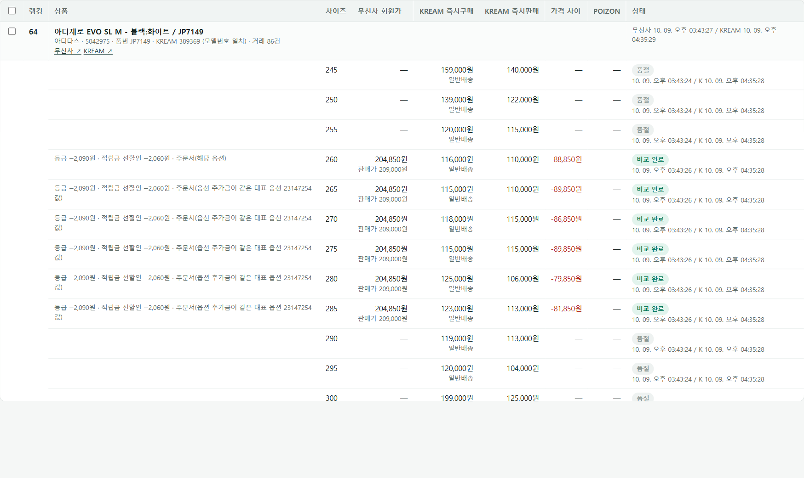
services/comparison_service.py size_key, build · shops/crawler.py compute_final_v2 · services/pipeline.py collect_one
기존 프로그램은 수집을 시작할 때 상품 테이블을 비웠습니다. 한쪽이 실패하면 다른 쪽 결과도 사라졌습니다. 저장 계층은 덮어쓰기 대신 갱신을 하고, AI의 제안과 사람의 결정을 서로 다른 테이블에 둡니다.
# 같은 사이즈를 다시 수집해도 행은 하나 (storage/store.py) PRIMARY KEY (kreamId, size) -- kream_quotes PRIMARY KEY (goodsNo, optionNo) -- musinsa_variants PRIMARY KEY (jobId, stage, goodsNo) -- job_items # 테스트: 재실행 뒤 (kreamId, size)별 행 수가 모두 1인지 확인 SELECT kreamId, size, COUNT(*) FROM kream_quotes GROUP BY kreamId, size
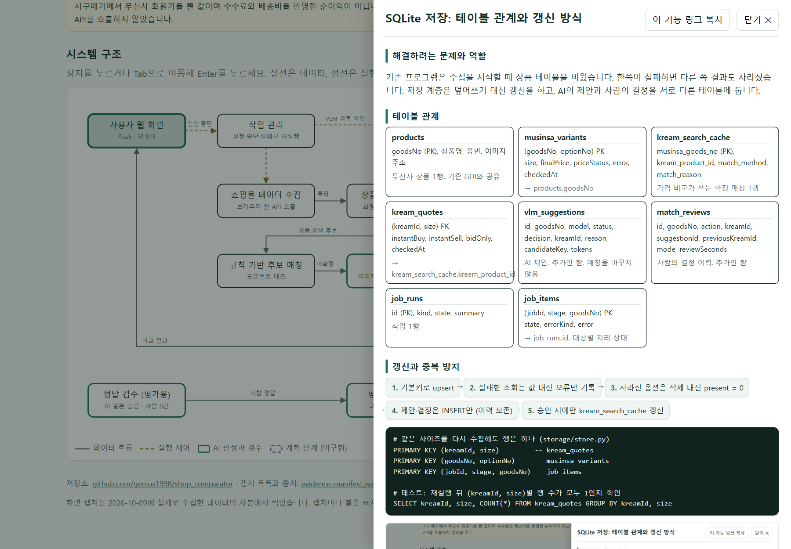
storage/store.py init, save_variant, save_kream_quotes, add_suggestion, add_review, mark_item · storage/database.py(기존 스키마) · 테스트 test_refresh_failure_keeps_last_verified_price_as_stale, test_resume_fetches_only_failed_and_unreached_products
CREATE TABLE IF NOT EXISTS) 기존 GUI 테이블을 비우지 않습니다.기존 규칙은 "검색 결과 중 품번이 같은 상품, 없으면 첫 번째 결과"였습니다. 같은 상품이어도 두 쇼핑몰의 품번이 다른 경우가 많아 절반 이상이 첫 번째 결과로 넘어갔고, 그 대부분이 다른 상품이었습니다.
| 원인 | 예 |
|---|---|
| 무신사 품번이 판매자 관리번호 | NBPDGF733B_19 ↔ U740BM2 (실제 모델번호는 상품명 안에 있음) |
| 표기 차이 | VN000D3HBKA1 ↔ VN000D3HBKA |
| 같은 모델번호를 여러 상품이 사용 | 에어포스 1 CW2288-111: 일반판과 협업판 |
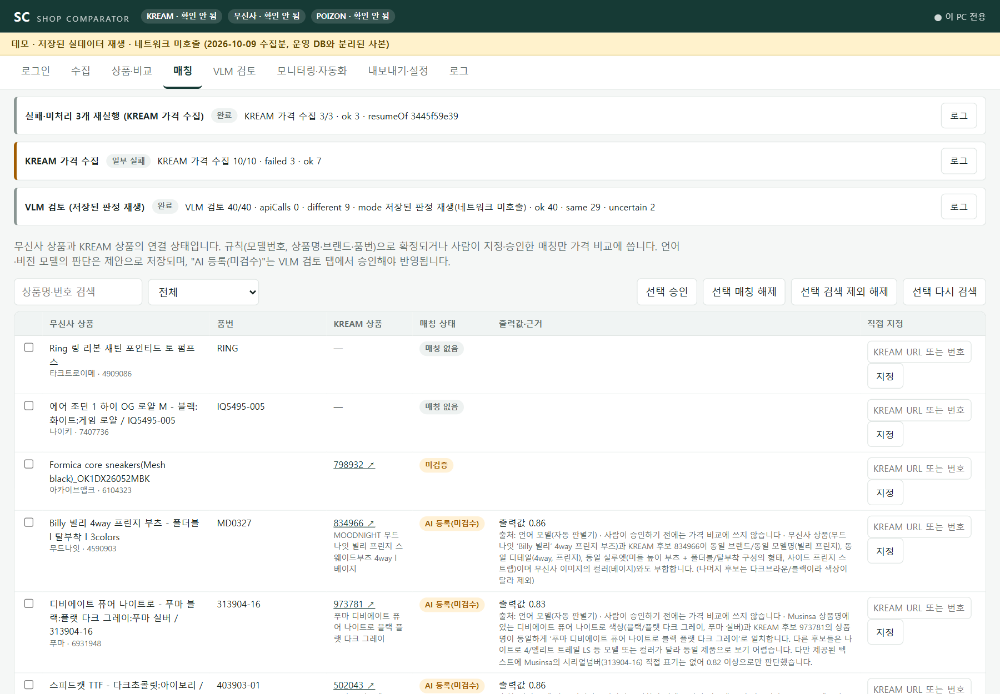
| 방법 | 확보 | 비고 |
|---|---|---|
| 기존 규칙(품번 일치) | 118 | 그 밖의 128개에는 첫 번째 결과를 사용. 확인한 52개 중 44개가 다른 상품 |
| 모델번호 대조 확장 | 153 | +35. 확정하지 못하면 매칭하지 않음 |
matching/match_review.py name_codes, code_match, decide, apply_model_matches · matching/evaluate.py legacy_pick, model_code_pick
규칙으로 확정하지 못한 상품은 사람이 양쪽 이미지를 보고 같은 상품인지 가려야 했습니다. VLM은 그 검토의 후보를 먼저 제안합니다. 제안은 저장만 되고 매칭을 바꾸지 않습니다.
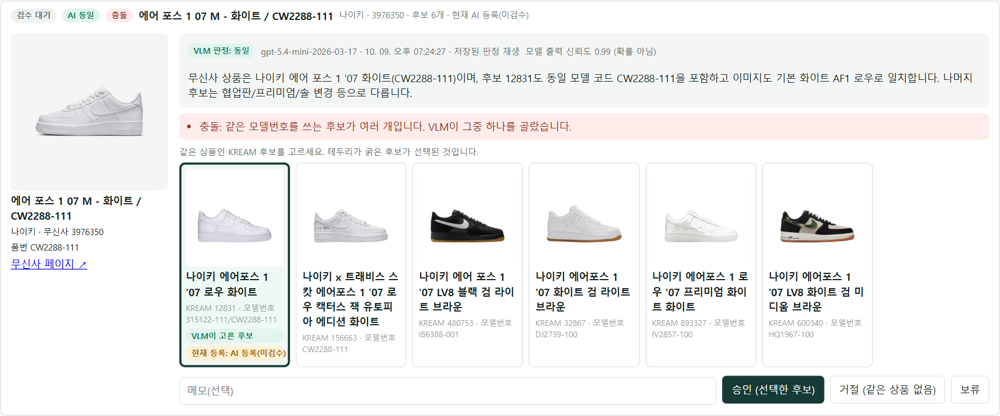
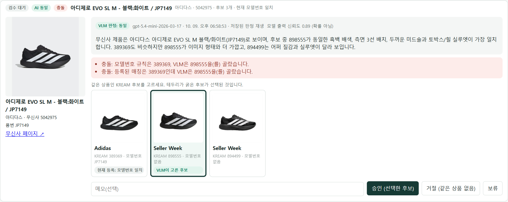
// 모델에 요구하는 응답 형식 (matching/vlm_match.py SCHEMA)
{"decision": "same" | "different" | "uncertain",
"kream_id": "12831", "confidence": 0.99, "reason": "..."}
# 응답 검증 (services/vlm_review.py validate)
decision not in (same, different, uncertain) -> InvalidAnswer("format")
decision == same and kream_id not in candidates -> InvalidAnswer("unknown_candidate")
confidence가 0~1 밖이거나 숫자가 아님 -> 값을 비움 (추정하지 않음)
판정 시각 < 후보 수집 시각 -> InvalidAnswer("stale")
| Qwen3-VL-8B (자체 GPU) | gpt-5.4-mini | gpt-5.4-nano | |
|---|---|---|---|
| 정확도 | 92.0% | 87.0% | 73.0% |
| 다른 상품을 동일로 판정 | 5 / 50 | 2 / 50 | 0 / 50 |
| 같은 상품을 찾음 | 47 / 50 | 43 / 50 | 26 / 50 |
| API 비용(쌍당) | 0원 | 약 1.78원 | 약 0.52원 |
100쌍 규모라 1~2건 차이는 의미가 없고, nano의 "0건"은 무오류를 뜻하지 않습니다. Qwen은 서버가 정한 프롬프트만 쓸 수 있어 프롬프트가 같지 않습니다.
services/vlm_review.py review_products, validate, candidate_key, image_problem · matching/vlm_match.py judge, SCHEMA · matching/vlm_benchmark.py · 테스트 tests/test_vlm_review.py SuggestionTests
VLM은 틀립니다. 틀린 매칭은 곧 틀린 가격 비교이므로, 사람이 확인한 매칭만 가격 비교에 쓰이게 했습니다. 검수 화면은 판단에 필요한 것을 한 장에 모으고 결정과 근거를 이력으로 남깁니다.
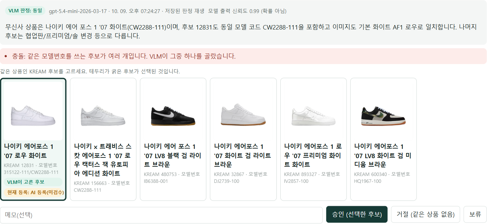
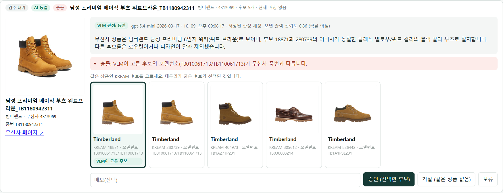
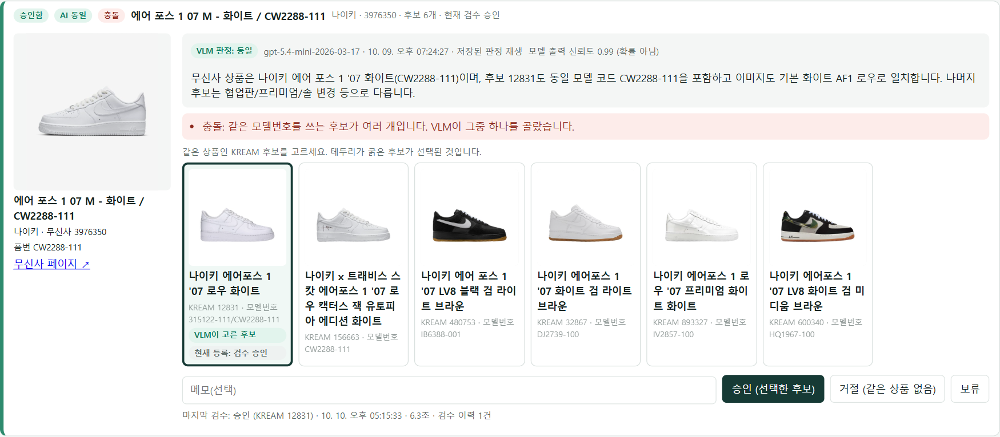
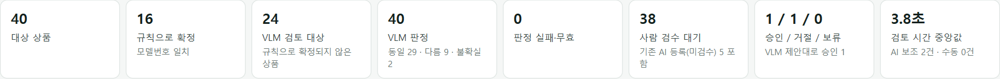
-- 제안과 결정은 서로 다른 테이블이다
vlm_suggestions: id=7, goodsNo=3976350, decision=same, kreamId=12831, model=gpt-5.4-mini-...
match_reviews: id=2, goodsNo=3976350, action=approve, kreamId=12831,
suggestionId=7, previousKreamId=NULL, mode=assisted, reviewSeconds=...
services/vlm_review.py queue, decide, metrics, _conflicts · web/web_app.py review_list, review_decide · web/static/app.js reviewCard · docs/review-measurement.md · 테스트 DecisionTests
docs/review-measurement.md에 있습니다.KREAM은 사이즈마다 시세가 다릅니다. 상품 단위가 아니라 같은 상품의 같은 사이즈끼리 비교해야 합니다. 비교는 확정된 매칭만 쓰고, 결과를 저장하지 않고 요청할 때마다 양쪽 테이블에서 계산합니다.
| 용어 | 뜻 |
|---|---|
| KREAM 즉시구매가 | 새 상품을 지금 살 수 있는 최저가. 배송 유형과 함께 저장 |
| KREAM 즉시판매가 | 지금 팔 수 있는 가격(가장 높은 구매 입찰가). 즉시구매가와 다른 값 |
| 가격 차이 | 즉시구매가 − 회원가. 수수료·검수비·배송비를 반영하지 않았으므로 순이익이 아님 |
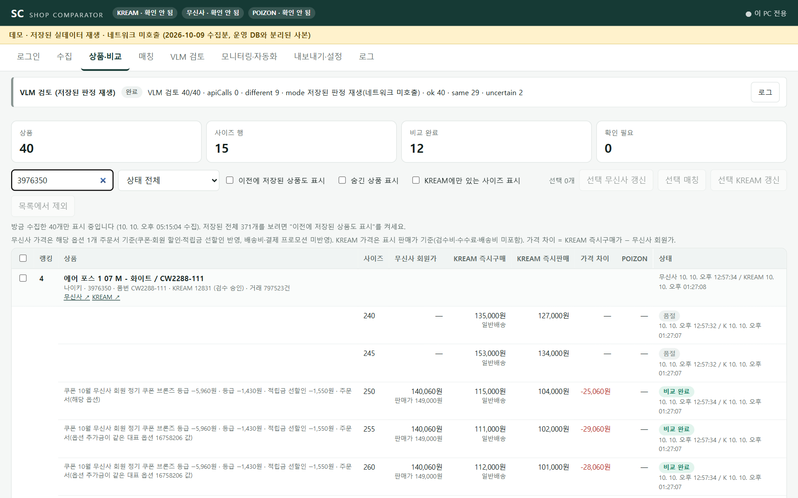
services/comparison_service.py build, match_info, summarize · 테스트 test_only_an_approval_makes_the_match_used_for_prices
가격을 사이즈 단위로 훑어보고, 이미지로 매칭이 맞는지 다시 확인할 파일이 필요했습니다.
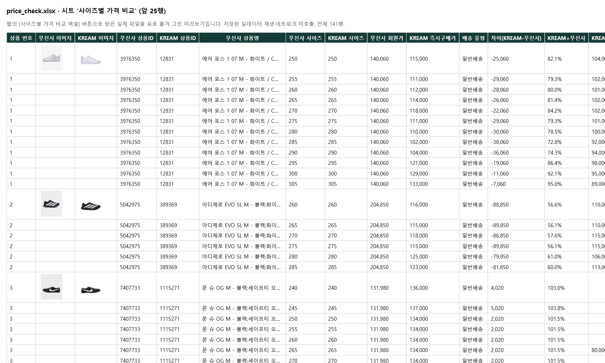
# 100000 * 1.1 은 부동소수점으로 110000.00000000001 이다. 정수로 비교한다. return 2 if kream_buy * 100 >= musinsa_price * 110 else 1
matching/match_review.py export_xlsx, price_level, fill_match_images · services/exports.py · web/web_app.py export_price_check, export_review_log
재입고, 가격 하락, 구매 제한 해제를 주기적으로 확인하고, 가격 차이가 설정한 금액 이상인 사이즈를 디스코드로 알립니다.
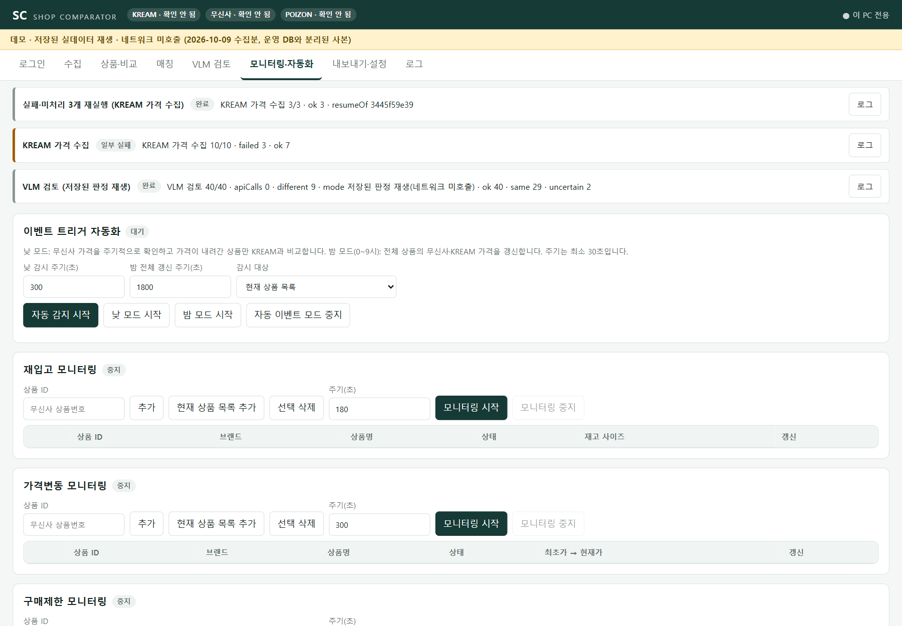
services/monitoring.py Monitor, AutoEvent · services/pipeline.py alert_difference, _notify_margin · core/webhook.py
"VLM을 붙였다"가 아니라 "얼마나 맞고 어디서 틀리는가"를 말할 수 있어야 합니다. 평가는 고정 데이터와 저장된 판정으로 다시 계산할 수 있게 저장소에 넣었습니다.
| 방법 | 정밀도 | 재현율 | 오매칭 | 사람에게 넘김 | 미실행 |
|---|---|---|---|---|---|
| A0 기존 규칙 | 61/152 | 61/83 | 91 | 0 | 0 |
| A 모델번호 규칙 | 77/77 (정의상) | 77/83 | 0 | 77/154 | 0 |
| B 텍스트 점수 | 12/13 | 12/83 | 1 | 82/154 | 0 |
| C VLM (gpt-5.4-mini) | 81/85 | 81/83 | 4 | 0 | 68 |
| D 규칙 + VLM | 83/86 | 83/83 (선택 편향) | 3 | 0 | 68 |
개발용(규칙을 만들 때 본 첫 100개와 그 변형 상품)을 뺀 평가용만의 수치입니다. "미실행"은 정답 후보를 뺀 "동일 상품 없음" 사례에 대한 VLM 판정이 없다는 뜻입니다.
python -m shop_comparator.matching.evaluate # 118 → 153 → 167 python -m shop_comparator.matching.method_eval # A0, A, B, C, D (1:N, 없음 포함) python -m shop_comparator.matching.vlm_benchmark # 3개 모델, 이미지 쌍 100개
matching/method_eval.py cases, outcome, score · matching/evaluate.py · matching/vlm_benchmark.py · docs/evaluation/ · docs/method-evaluation.md, docs/matching-evaluation.md
사람이 볼 필요가 없는 매칭은 자동으로 확정하고, 사람은 애매한 것만 보게 하는 것입니다. 지금은 규칙으로 확정된 것 외에는 모두 사람이 승인해야 합니다.